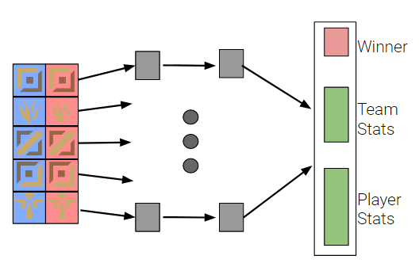
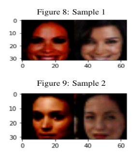
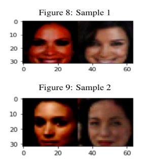
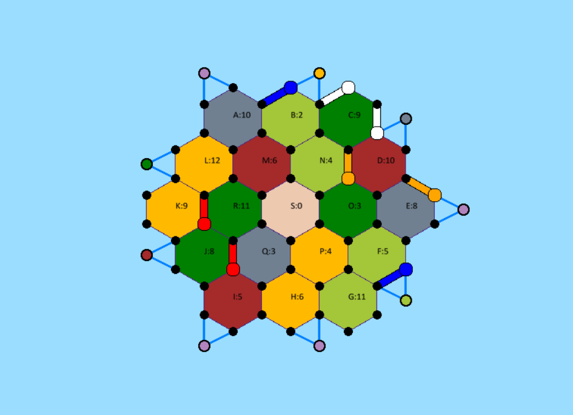
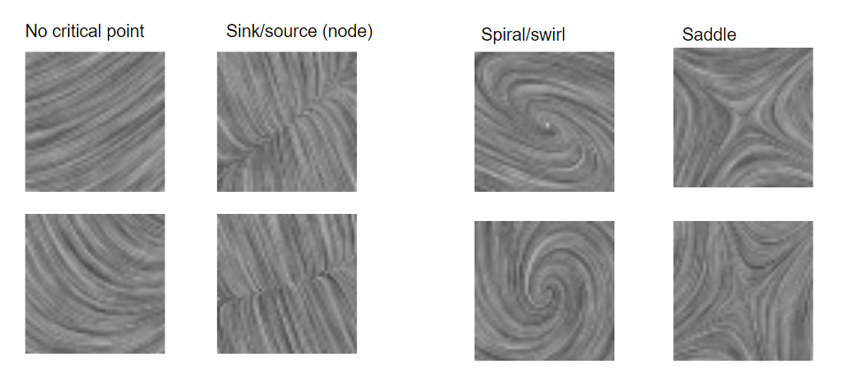

Recent/ Current Projects
- League of Legends: Skill Prediction
- Dataset Distillation for Privacy using GANs
- Catan: Deep Reinforcement Learning
- CNN Evalutation of Vector Field Visualizations
This project attempts to evaluate the skill of the players in a given League of Legends video game. The network is trained on previous games from all players and is able to predict the winning team of future games with 60% accuracy while only knowing the players and champions at the beginning of the match.

The medical domain is full of sensitive user data which companies are consequently reluctant to share. This project is about training a GAN to accurately represent a given distribution while maintaining the privacy of the data points used to train the model (so the GAN can thereafter be shared with the public and can generate new private samples for anyone to train their model on.) There is a language of differential privacy already in the literature to address the privacy concerns for each data sample (user) and in this project we evaluate both the sample quality and the sample privacy as a proof of concept for this line of work.
 

This project implements the board game CATAN which is a complex game involving planning, long-term decision-making, probabilistic value evaluation, and social trading amongst players. Next, this project will train reinforcement learning agents to play this complex board game. Currently, I have finished implementing the gameplay and am exploring different deep RL methods to solve this difficult problem.

The crux of data visualization research is the "user-study" to understand how effective a particular DV method is at conveying the information/ data it is trying to show. This work combines scientific visualization with the work of Haehn in the context of vector field visualization to see how CNN-vision compares to human-vision. In particular, we try to identify the 'type' of critical point in a 2D vector field visualization. This work has the potential to influence computer vision by increasing our understanding of CNN models as well as the potential to influence data visualization by creating a much quicker version of the "user-study" by replacing human surveyees with CNN models.
